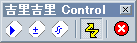

 脚本编辑器
脚本编辑器- 打开脚本编辑器。
 表达式监视器
表达式监视器- 打开表达式监视器。
 控制台
控制台- 打开控制台。
 事件发生
事件发生- 控制事件的发生。按下的状态下系统会发生事件，在没有按下的状态下不会发生事件。吉里吉里基本上是事件驱动型的编程模型，所以在没有发生事件的状态下程序会停止。如果任何地方都没有捕获异常，则不会自动发生事件。
此按钮与System.eventDisabled属性关联。 - 转储TJS上下文（在右键菜单中）
- TJS2脚本引擎保存的每个上下文的转储（主要是反汇编）将输出到文件。与Scripts.dump 方法类似。
- 生成消息映射文件(在右键菜单中)
- 输出吉里吉里内置的各消息的列表和与之对应的消息的当前设定。这个文件和吉里吉里可执行文件本体放在同一个地方，吉里吉里启动时可以自动读取并重新设定信息。默认名称为msgmap.tjs。
- 重新启动脚本引擎(在右键菜单中)
- 重新启动TJS2脚本引擎。这将初始化TJS2，但不会重新启动整个系统或内部状态。在某些情况下，重新启动时会出现错误。
 强制终止程序
强制终止程序- 强制退出程序。